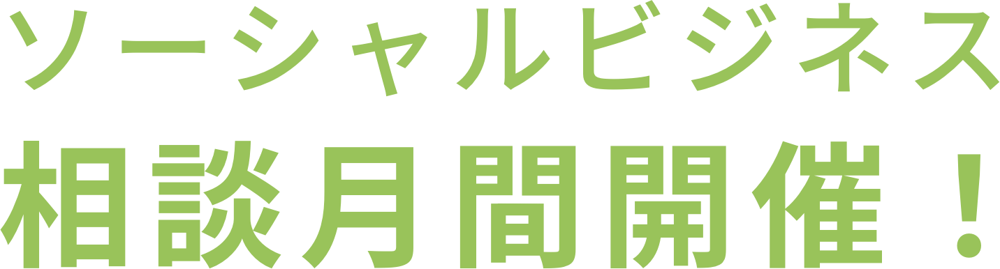
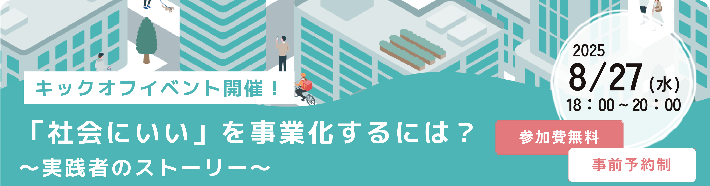
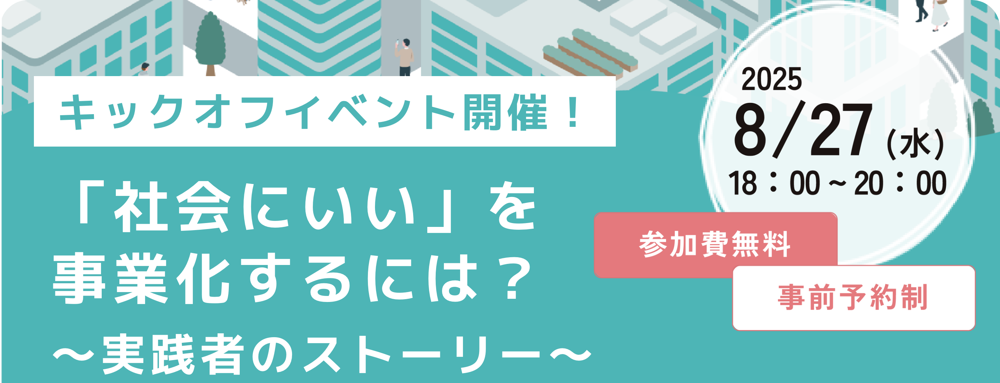

9月～10月にかけて、相談会やセミナーなどを各地で集中的に開催します。地域貢献につながる事業をステップアップしたい方はもちろん、これからソーシャルビジネスでの創業をお考えの方も是非参加してみませんか？
過去ご参加いただいた方の声
令和6年度の参加者数600名以上！
-
事業計画について、具体的なアドバイスがあり、目指す方向が明確になりました。
-
地域課題に対するさまざまな解決方法を知ることができ、学びと支えになりました。


イベントを探す ※随時更新中
-
相談会 オンライン+リアル（対面）10月20日（月）～11月28日（金） 10：00～16：00
愛媛県
ソーシャルビジネスお悩み相談会
～さいじょうソーシャルビジネスサポーターズ～・社会的企業や地域貢献につながる事業を営む方、ソーシャルビジネス分野での創業をお考えの方などを対象とした相談会です。資金調達や事業計画の策定、補助金・助成金申請手続きなどのご相談にお答えします。
-
セミナー リアル（対面）10月24日（金）18：30～20：20
愛知県
介護、社会福祉業界のための採用・人材定着スキルアップセミナー
-ソーシャルビジネスセミナー in東海市ソーシャルビジネス支援ネットワーク-介護・社会福祉事業等のソーシャルビジネス事業者に向けて、着実に良い人材を確保し、定着してもらうためのノウハウをお伝えするセミナーです。
-
セミナー＋相談会 リアル（対面）10月27日（月）15：00～17：00
岩手県
～現場の真ん中から地域貢献を～ソーシャルビジネス課題解決セミナー
ソーシャルビジネスの事業主が直面する課題「地域貢献と事業継続のバランス」について、その解決方法を学ぶものです。
-
セミナー＋相談会 リアル（対面）10月29日（水）14：00～15：30
石川県
ソーシャルビジネス支援セミナー ｰ 事例で学ぶソーシャルビジネス ｰ
社会的企業や地域貢献につながる事業を営む方や創業予定の方などを対象にしたセミナーです。働きやすい職場づくりをテーマに株式会社ウフフ 代表取締役 志賀 嘉子氏による講演を行います。
-
その他 リアル（対面）10月28日（火）19：00～21：00
大阪府
ソーシャルビジネス交流会
地域でソーシャルビジネスを営む３団体による事例紹介をした後、参加者同士で交流します。
-
相談会 リアル（対面）10月23日（木）10：00～16：00
東京都
ソーシャルビジネス相談会in三鷹
三鷹市及び近隣で、ソーシャルビジネス分野の創業をお考えの方、ソーシャルビジネスをステップアップさせたい方などを対象とした相談会です。担当者が資金調達や事業計画策定などご相談にお答えします。
-
セミナー＋相談会 リアル（対面）10月23日（木）13:00～16:15
千葉県
ちばソーシャルビジネスセミナー
NPO法人などの社会的企業や地域貢献事業を営む方、ソーシャルビジネス分野での創業者などを対象に、マーケティングの基本（現状把握と分析結果を事業計画に落とし込むプロセス）を座学とワーク形式でお伝えします。
-
セミナー リアル（対面）10月9日（木）、10月16日（木）、10月23日（木）10:00～12：00
兵庫県
女性のためのソーシャルビジネスのはじめかた
身近に感じる「あったらいいな」を実現してみませんか？
ソーシャルビジネスに興味がある方、実現に向けたアイデアを整理したい方、創業への一歩を踏み出したい方向けのセミナーです。 -
セミナー オンライン10月22日（水）13：30～15：30
長野県
ソーシャルビジネスセミナー
ソーシャルビジネスに関心のある方を対象に、先輩事業者による講演や、テーマ別の分科会（講師への質問タイム）を行う予定です。
-
相談会 リアル（対面）9月22日（月）、10月21日（火）
10：30～12：00静岡県
ソーシャルビジネスなんでも相談会inよしわら
NPO法人などの社会的企業や地域貢献につながる事業を営む方、ソーシャルビジネス分野での創業をお考えの方などを対象とした、なんでも相談会です。事業計画書の策定や資金調達方法などのご相談にお答えします。
-
相談会 リアル（対面）10月14日（火）～10月17日（金）10：00～16：00
広島県
ソーシャルビジネス相談ウィーク ～ ソーシャルビジネス支援ネットワークひろしま ～
NPO法人などの社会的企業や地域貢献につながる事業を営む方、ソーシャルビジネス分野での創業をお考えの方、地域貢献につながる事業をステップアップさせたい方などを対象とした相談会です。
-
セミナー＋相談会 リアル（対面）9月1日（月）～10月18日（土）（全６回）
神奈川県
ソーシャルビジネス起業スクール
～社会課題をビジネスで解決する！～ソーシャルビジネスを営む方や、これから営もうとする方など向けに、ソーシャルビジネス特有の資金調達方法についてご案内するセミナーです。
-
セミナー オンライン+リアル（対面）10月16日（木）18：45～20：45
東京都
ソーシャルビジネス入門
～地域・社会の課題をビジネス手法で解決しよう！～地域活性化、子育て、介護など社会的課題を解決するため取り組む事業活動に有効なビジネス手法や実践的な知識をご案内するセミナーです。
-
セミナー リアル（対面）10月15日（水）15：00～17：00
佐賀県
ソーシャルビジネス支援セミナー
地域金融機関の有志が集まる「ちいきん会」代表理事・新田信行氏を講師に迎え、ソーシャルビジネス支援機関や同分野で事業を営む方などへ、地域創生に関する情報を提供するセミナーです。
-
セミナー オンライン+リアル（対面）10月11日（土）13：30～15：00
北海道
Youth Co:Lab 日本ダイアローグ2025 in 北海道～地域から世界へ 社会起業が広げるSDGsインパクト～
「地域から世界へ 社会起業が広げるSDGsインパクト」をテーマに、地域資源を活かした社会課題解決の実践例を通じて、地方創生とグローバルな視点の融合を探ります。
-
セミナー＋相談会 リアル（対面）10月8日（水）18：00～19：30
埼玉県
令和７年度 草加ソーシャルビジネスサポートネットワークセミナー ～ 草加市まちづくり講座 ～
ソーシャルビジネスにおける「社会性」と「事業性」の両立について、両立を推進している複合施設のコミュニティマネージャー及び同施設内の経営者を講師に迎え、開かれたコミュニティ拠点の在り方について、その成り立ちや今後の展望等をご講演いただきます。
-
相談会 オンライン10月8日（水）9:00～17:00
愛知県
ソーシャルビジネス事業者向け資金相談会
社会的課題の解決を図る事業にて、創業をお考えの方、すでに事業を営んでいる方を対象とした無料の個別相談会となります。
-
セミナー＋相談会 オンライン+リアル（対面）10月3日（金）15：00～18：00
福岡県
くるめソーシャルビジネスセミナー＆交流会2025
ソーシャルビジネスに興味のある方、社会課題の解決に取り組む方等を対象としたイベントです。筑後地域でソーシャルビジネス分野の創業をお考えの方、ソーシャルビジネスをステップアップさせたい方などを対象としています。また公庫担当者による個別相談会も実施します。
-
相談会 リアル（対面）9月27日（土）13：00～17：00
滋賀県
どうする!?大相談会
ソーシャルビジネスや地域活動に興味や関心がある方を対象とした相談会です。資金調達や事業計画の策定などについて、５つの支援機関が集まってご相談にお答えします。
-
セミナー リアル（対面）9月27日（土）10：00～11：50
滋賀県
”ソーシャルビジネス”なにそれ?セミナー
～知っておきたいお金のこと編／ファンドレイジングってなにそれ？～社会的課題の解決や地域貢献につながるソーシャルビジネスを営む方・これから始める方など向けに、認定ファンドレイザーの高橋好美氏がソーシャルビジネスの資金調達方法などをわかりやすく説明するセミナーです。
-
セミナー リアル（対面）10月2日（木）より毎週木曜日（全４回）18：00～21：00
北海道
さっぽろソーシャルビジネススクール
ソーシャルビジネスでの起業に関心がある方や介護、子育てなどの地域課題を解決するため、社会起業家を目指している方を対象に、創業時に役立つ基礎知識にフォーカスしたカリキュラムを提供し知識を深めることで、創業に踏み出す契機とする（全 4 日間）。
-
セミナー リアル（対面）9月20日（土）～2026年1月31日（土）（全４回）
兵庫県
地域しごと起業セミナー
本講座ではコミュニティ・ビジネス（以下CB）起業を目指している方を対象にCB起業に向けた事業計画書の作成およびCBマネジメントを学び、実際にトライアルを経て具体的な事業計画づくり・実施までをサポートします。
-
セミナー リアル（対面）9月3日（水）13：45～18：00
九州地区（沖縄県を除く）
九州ソーシャルビジネスサポートネットワークフォーラム2025
「対話による新価値創造、新結合から生まれる地域発ソーシャルビジネス物語」「対話」の時間を多様に組み合わせ「参加し聞いて学ぶから、対話し参画、次の行動へ」をテーマとしたセミナーです。「地域発ソーシャルビジネス物語」を中心に4人のプレゼンターからご紹介いただきます。
-
セミナー リアル（対面）9月3日（水）15：00～17：00
京都府
伝統産業の未来を見据えて
～チャンスをつかむ販路開拓とお金のはなし～伝統産業・関連事業に取り組む皆様に、その事業をさらに発展させ次世代につなぐための、販路開拓やマーケティング、資金管理のノウハウを、地域の伝統産業支援の先頭にたつお二方に語っていただきます
よくあるご質問
複数のイベントへの参加は可能ですか？
可能です。ご興味のあるイベントにご参加ください。
ソーシャルビジネスのことをよく知らないのですが参加してもよいですか？
少しでも興味があればお気軽にご参加ください。
イベントの申込方法について教えてください。
該当するイベント詳細ページをご覧ください。
ソーシャルビジネスお役立ち情報
ソーシャルビジネスに取り組む方にご覧いただきたい情報をご紹介します。